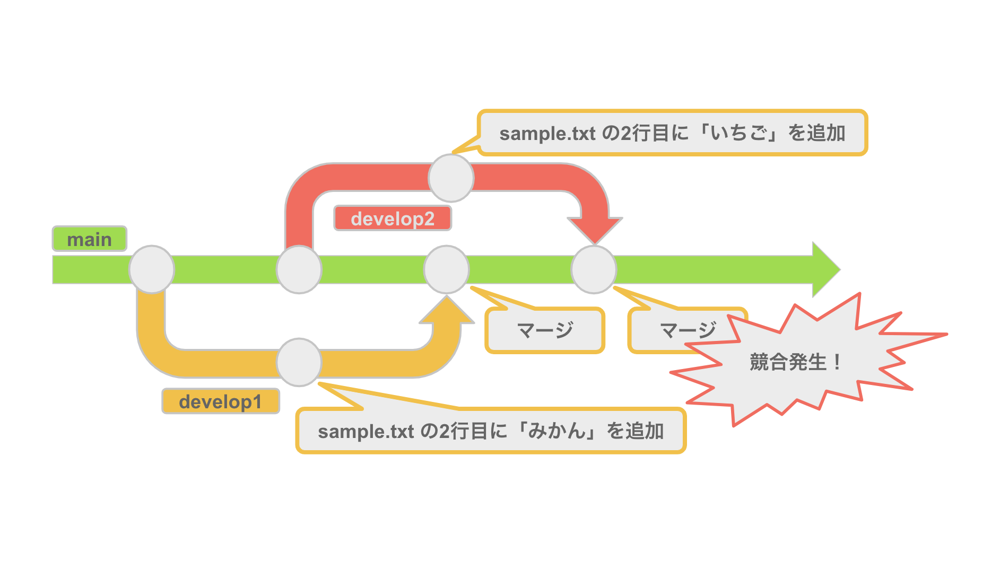

競合の解消
Git で起こるトラブル
基礎編と応用編を通して Git の操作にはある程度の自信がついたのではないのかなと思います。
実際に開発プロジェクトでは基礎編と応用編の知識を活かすことで開発を進めることができるでしょう。
しかし、実際の開発プロジェクトでは様々なトラブルが起きるのです。
この実践編ではよくあるトラブルを解消をする方法を学んでいきましょう。
競合の解消
競合とは
変更内容をマージする際に、同じファイルの同じ行が既に変更されていると衝突してしまい「競合（コンフリクト）」と呼ばれる事象が発生します。
競合が発生すると、２つの履歴のうちどちらの変更が正しいかは Git が判断することができないため同ファイルのマージが中断されます。

マージの際に競合が発生すると以下のようなメッセージが表示されます。
Auto-merging sample.txt
CONFLICT (content): Merge conflict in sample.txt
Automatic merge failed; fix conflicts and then commit the result.
チーム開発をしていると競合が起きるのも珍しくありません。 そして、競合が起きるのは決して悪いことではありません。 大事なのは履歴のうちどちらの変更が正しいかの判断を間違えないことです。
競合を解消してみよう
競合を解消すると開発者はつぎのいずれかの選択肢を取ることになります。
- マージを中止してマージ前の状態に戻す
- 競合を解消してマージをする
今回は両方とも試してみましょう。
マージを中止してマージ前の状態に戻す
その場で競合の解消が難しいなどの理由でどうしてもマージができない場合があります。
そのようなときは、以下のコマンドで実行して git merge コマンドを中止することができます。
git merge --abort
これは競合の解消ではなくマージを中断しただけのため、
競合箇所を修正せずに再度マージをすると再び競合が発生します。
競合を解消してマージをする
まずは競合を起こしているファイルを開きましょう。
競合が起きている部分はハイライトされているためわかりやすくなっています。
「«« HEAD」〜 「==========」が main ブランチにマージされている内容、
「==========」〜 「»» develop2」が develop2 ブランチの内容となっています。
今回は develop2 ブランチの内容を正しいということにしましょう。
ハイライトと main ブランチにマージされた内容を削除して、
develop2 ブランチの内容だけを残すようにしましょう。
インデックスにはまだマージ前のファイルが記録されているため、
競合を解消したファイルを git add コマンドで再度インデックスに追加する必要があります。
今回は以下のコマンドを実行して、 sample.txt をインデックスに追加しましょう。
git add sample.txt
あとはコミットをするだけです。
コンフリクトを解消したコミットはデフォルトでメッセージが生成されます。
メッセージは付与せずに以下のコマンドを実行してみましょう。
git commit
競合が起きないように開発者ごとに編集できるファイルを限定させるという運用ルールを設けることもできますが、これではチーム全体の作業効率を下げてしまうことになります。
慣れれば競合は恐いものではないので、ぜひ競合が起きた際は解消に挑戦してみましょう！